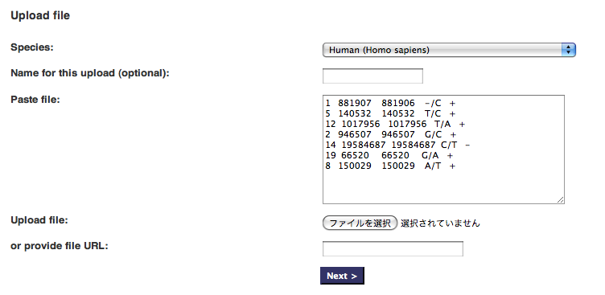
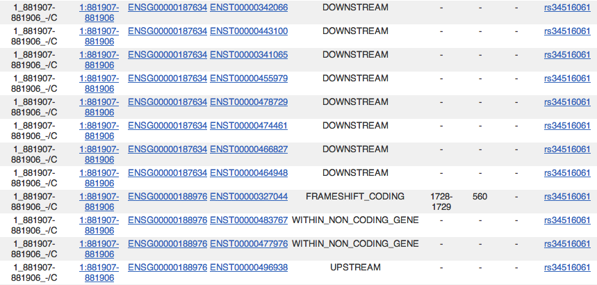

|
これの意図するとことはいわゆるsamtoolsのpileupのSOAP形式出力（chr19:3298 A C）のような形式を、
ここからは希望になりますが、 |
UCSC からの情報取得に詳しくないので傍観していたのですが、回答者が今のところいないので、分かる範囲で答えてみます。 UCSC からではなく、Ensembl からであれば、比較的簡単に RNA editing の情報を持って来れます。 "Bio::EnsEMBL::SeqEdit" モジュールを使うと、次のように RNA edit 後の mRNA 配列が得られます。 こちのらコード、Ensembl API Docs からの転載です。 より詳細は、http://uswest.ensembl.org/info/docs/Pdoc/ensembl/index.html のページをご参照ください。 TbDGC さんの目的には、例えば、 こんなコードで実現できるのではないでしょうか。 （こちらのコード、未テストです、済みません。） 他にもより良い方法はあると思いますが、参考になれば幸いです。
このようなサービスができると、とても素晴らしいと思います。期待してます！ |
|
SNP Effect Predictor 初めて使ってみました、これは便利ですね！ Web アプリケーションと API script があるのですね。 Web アプリケーションだけ使ってみました： こんな感じで，SNP 情報を入力。  すると，こんな感じで SNP の影響を教えてくれる。  あとはリンクを辿って調べてゆくと，NOC2L という遺伝子へのフレームシフト変異であることが分かる。 これは使えますね、情報ありがとうございました。 > ma_ko さん 今度 API script の方も使ってみようと思いますー |
|
ずっと移動中できちんと問題を把握してるか自信ないんですが、Intergrated with Galaxy (コマンドラインでも動く、 Java 製)な snpEff: SNP effect predictor http://snpeff.sourceforge.net/ というのもあります (ちょっと最近のバージョンは未検証…)。 これ元々、上で取り上げた Ensembl の SNP Effect Predictor (今は Varinat Effect Predictor と名称が変わっていました) に触発されて開発されたものなので、こちらも良いかもしれません。Sourceforge を見る限りでは、pileup format の入力にも対応したようです。 ずっと移 (略) が、手元で動作させたところ、ダイレクトに pileup format をインプットにして動作しました。 snpEff_core_v1_8.zip |
|
ずっと移動中できちんと問題を把握してるか自信ないんですが Ensembl のSNP Effect Predictor はどうでしょうか？ http://www.ensembl.org/tools.html ちなみに API 叩くスクリプト版では pileup format をインプットとして扱えるっぽいです。 ずっと移動 (略) ですが、API script を手元で動作させたところ、ダイレクトに pileup format をインプットして動作しました。 ftp://ftp.ensembl.org/pub/misc-scripts/Variant_effect_predictor_1.0/ |
|
ずっと移動中で (略) ですが、UCSC の RNA editing track は、以下の文献を見る限り、 The UCSC Genome Browser database: update 2011 — Nucleic Acids Res DARNED というデータベースが元になっているようです。 僕自身、知らなかったことなので勉強になりました。ありがとうです > TbDGC さん |
|
ちょっと本題とはズレますが、しばらくスレッドを残してもらえるということなので追記です。 同様の質問が BioStar にもあったので参考までにリンクも残しておきます。 こっちも似てるけど、上のが良いような。 こちらは本論ではないですが、お役立ちかな。 自力でやる時、UCSC の knownGene と knownGenePep を join してやるとアミノ酸配列も取れるので少し楽になるかもですね。
This 回答 is marked "community wiki".
|
|
hacchyさん, mn3 ♦♦さん, ma_ko ♦♦さん 回答ありがとうございました。 |

REST で chrom:position+AA とするのは興味ぶかいインターフェイスですね。TogoWSのほうで検討してみたいと思います。